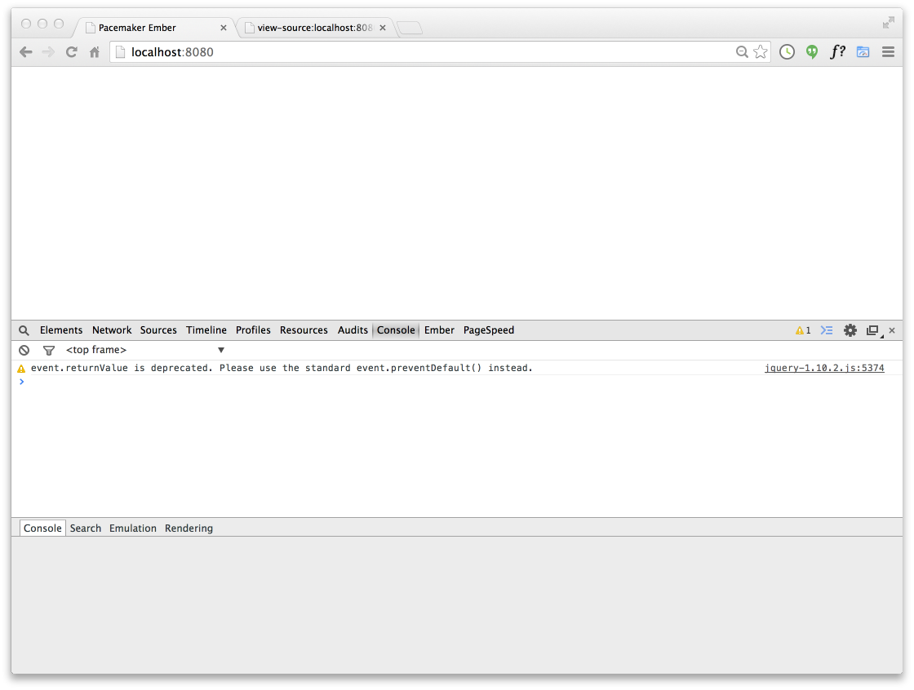
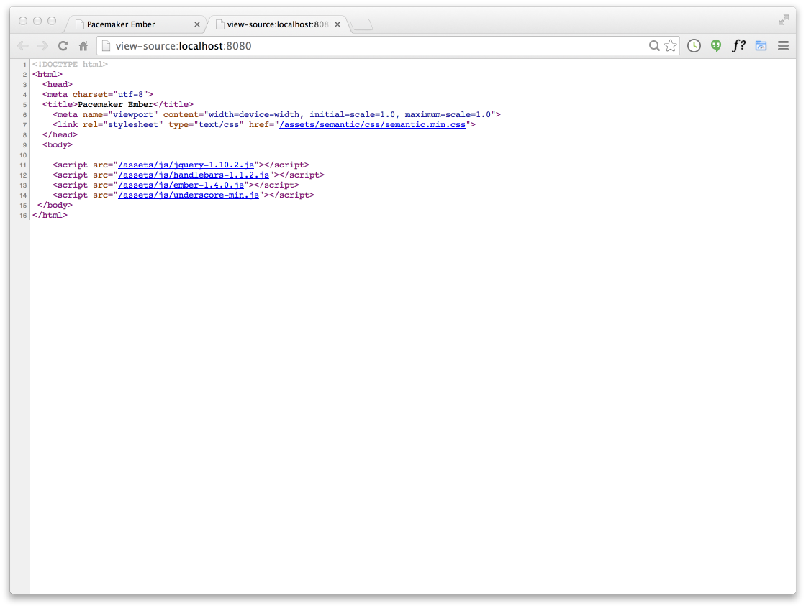
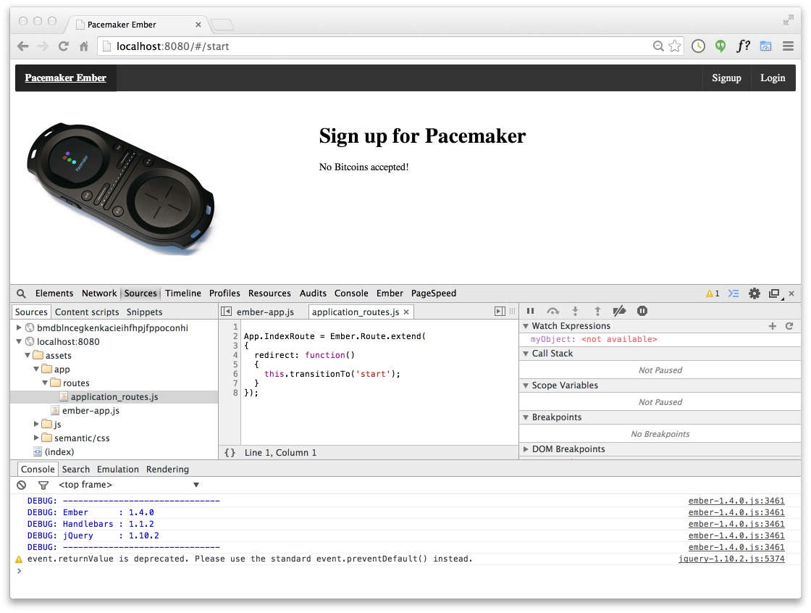
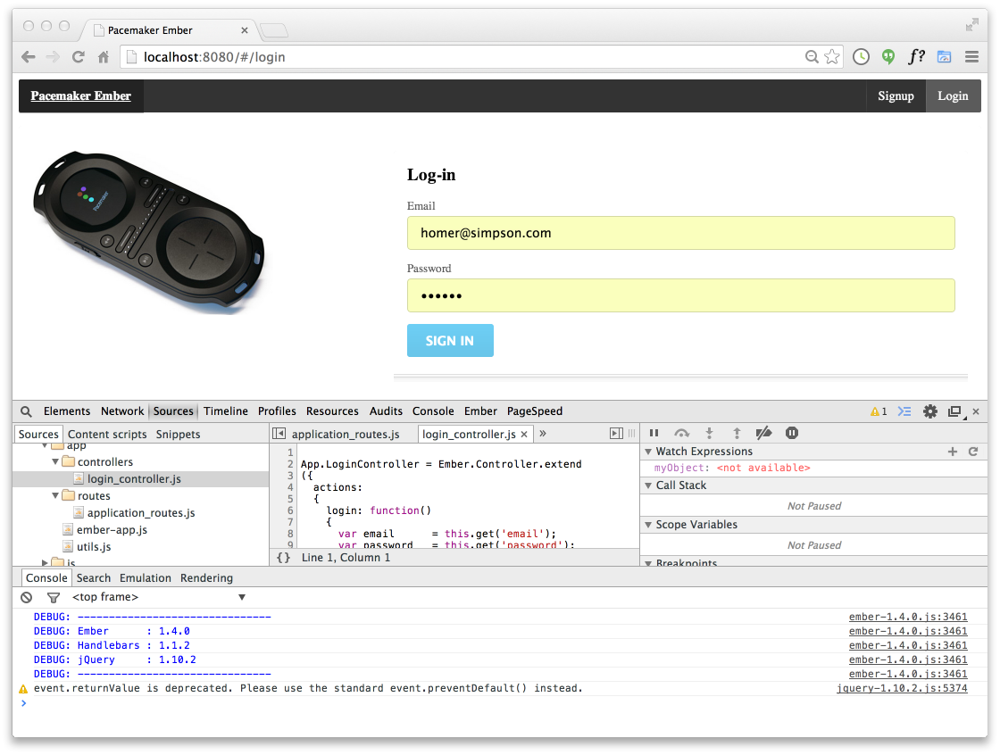
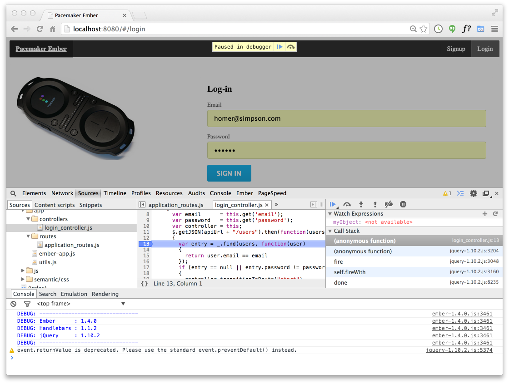
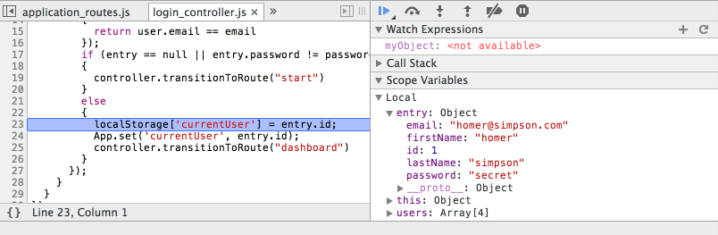
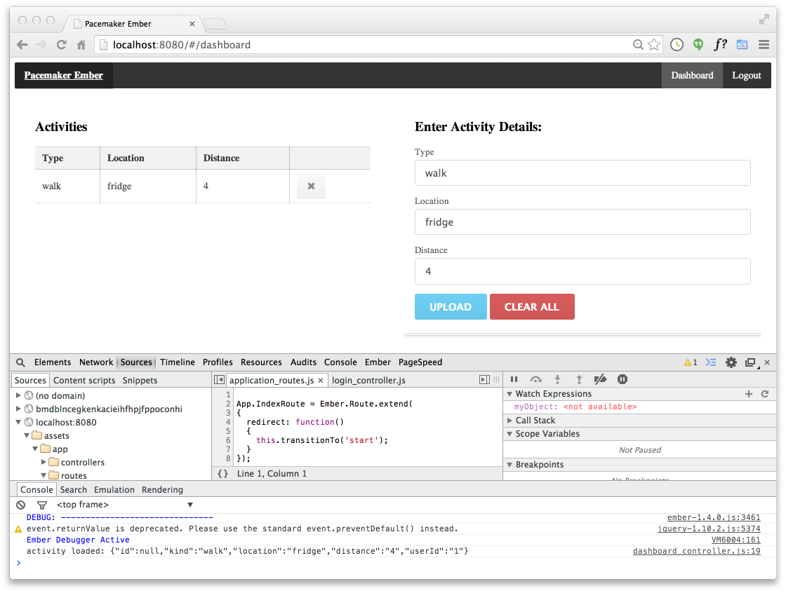

Build a User Interface for the pacemaker-node based on ember.js
Create a new folder in the pacemaker-node project called public. Create 2 subfolders:
Into images, save these two files:
In js bring in these files:
In the semantic folder, first download the Semantic UI archive:
Extract it somewhere, and copy the packaged folder into public, renaming it to semantic.
Your pacemaker-node/public folder should look like this:
├── images
│ ├── favicon.png
│ └── pacemaker.jpg
├── js
│ ├── ember-1.4.0.js
│ ├── handlebars-1.1.2.js
│ ├── jquery-1.10.2.js
│ └── underscore-min.js
└── semantic
├── css
│ ├── semantic.css
│ └── semantic.min.css
├── fonts
│ ├── basic.icons.eot
│ ├── basic.icons.svg
│ ├── basic.icons.ttf
│ ├── basic.icons.woff
│ ├── icons.eot
│ ├── icons.otf
│ ├── icons.svg
│ ├── icons.ttf
│ └── icons.woff
├── images
│ ├── loader-large-inverted.gif
│ ├── loader-large.gif
│ ├── loader-medium-inverted.gif
│ ├── loader-medium.gif
│ ├── loader-mini-inverted.gif
│ ├── loader-mini.gif
│ ├── loader-small-inverted.gif
│ └── loader-small.gif
└── javascript
├── semantic.js
└── semantic.min.jsIn public, create a new file called pacemaker.html
<!DOCTYPE html>
<html>
<head>
<meta charset="utf-8">
<title>Pacemaker Ember</title>
<meta name="viewport" content="width=device-width, initial-scale=1.0, maximum-scale=1.0">
<link rel="stylesheet" type="text/css" href="/assets/semantic/css/semantic.min.css">
</head>
<body>
<script src="/assets/js/jquery-1.10.2.js"></script>
<script src="/assets/js/handlebars-1.1.2.js"></script>
<script src="/assets/js/ember-1.4.0.js"></script>
<script src="/assets/js/underscore-min.js"></script>
</body>
</html>Now run the node application as before (from `./pacemaker-node'):
node app.jsand browse to:
If using chrome, the page should load without errors (using the inspector):

and the source should look as expected:

Still in public, create a new folder called app, containing the following script:
var apiUrl = '/api'
App = Ember.Application.create(
{
currentUser: localStorage['currentUser']
});
App.Router.map(function()
{
this.resource('start');
this.resource('signup');
this.resource('login');
this.resource('dashboard');
});In public/app create a folder called routes and introduce this script:
App.IndexRoute = Ember.Route.extend(
{
redirect: function()
{
this.transitionTo('start');
}
});Also in public/app, create a folder called controllers containing the following:
App.ApplicationController = Ember.Controller.extend(
{
signedInUser: function()
{
return this.store.find('user', localStorage['currentUser']);
}.property('App.currentUser'),
userSignedIn: function()
{
return localStorage['currentUser'] != null;
}.property('App.currentUser'),
actions:
{
signout: function()
{
delete localStorage['currentUser'];
App.set('currentUser', undefined);
this.transitionToRoute("start");
}
}
});We can now bring the application up. Back in pacemaker.html, introduce these two templates just inside the opening <body> tag:
<script type="text/x-handlebars" data-template-name="application">
<nav class="ui inverted menu">
<header class="ui header item"> <a href="/"> Pacemaker Ember </a> </header>
<div class="right menu">
{{#if userSignedIn}}
{{#link-to 'dashboard' activeClass="active" class='item'}} Dashboard {{/link-to}}
<a class="ui item" href="#" {{action 'signout'}}> Logout </a>
{{else}}
{{#link-to 'signup' activeClass="active" class='item'}}Signup{{/link-to}}
{{#link-to 'login' activeClass="active" class='item'}}Login{{/link-to}}
{{/if}}
</div>
</nav>
{{outlet}}
</script>
<script type="text/x-handlebars" data-template-name="start">
<section class="ui segment">
<div class="ui grid">
<aside class="six wide column">
<img src="/assets/images/pacemaker.jpg" class="ui medium image">
</aside>
<article class="ten wide column">
<h1 class="ui header"> Sign up for Pacemaker </h1>
<p> No Bitcoins accepted! </p>
</article>
</div>
</section>
</script>Finally, just before the closing </body> tag, include the two scripts defined above:
<script src="/assets/app/app.js"></script>
<script src="/assets/app/routes/application_routes.js"></script>
<script src="/assets/app/controllers/application_controller.js"></script>pacemaker-node/public should be structured as follows:
── app
│ ├── app.js
│ ├── controllers
│ │ └── application_controller.js
│ └── routes
│ └── application_routes.js
├── images
│ ├── favicon.png
│ └── pacemaker.jpg
├── js
│ ├── ember-1.4.0.js
│ ├── handlebars-1.1.2.js
│ ├── jquery-1.10.2.js
│ └── underscore-min.js
├── pacemaker.html
└── semantic
...Browsing to :
should bring up the application:

Note that we can set breakpoints, and even debug, the application.
Introduce a login template into pacemaker.html:
<script type="text/x-handlebars" data-template-name="login">
<section class="ui segment">
<div class="ui grid">
<aside class="ui six wide column">
<img src="/assets/images/pacemaker.jpg")" class="ui medium image">
</aside>
<div class="ui ten wide column fluid form">
<div class="ui stacked segment">
<h3 class="ui header">Log-in</h3>
<form {{action 'login' on="submit"}}>
<div class="field">
<label>Email</label>
{{input id="email" value=email placeholder="Enter your email address"}}
</div>
<div class="field">
<label>Password</label>
{{input id="password" value=password type="password" placeholder="Enter your password"}}
</div>
<button class="ui blue button" type="submit"> Sign in </button>
</form>
</div>
</div>
</div>
</section>
</script>For this template, we need a controller, located in public/app/controllers:
App.LoginController = Ember.Controller.extend
({
actions:
{
login: function()
{
var email = this.get('email');
var password = this.get('password');
var controller = this;
$.getJSON(apiUrl + "/users").then(function(users)
{
var entry = _.find(users, function(user)
{
return user.email == email
});
if (entry == null || entry.password != password)
{
controller.transitionToRoute("start")
}
else
{
localStorage['currentUser'] = entry.id;
App.set('currentUser', entry.id);
controller.transitionToRoute("dashboard")
}
});
}
}
});This script makes use of a helper functions we can define in another script in public/app:
function apiDelete(api)
{
$.ajax(
{
url: api,
contentType: 'application/json',
type: 'DELETE',
data: "{}",
processData: false,
dataType: 'json'
})
}
function apiPost(api, object, doneCallback )
{
$.ajax(
{
url: api,
type: 'POST',
contentType: 'application/json',
data: JSON.stringify(object),
processData: false,
dataType: 'json'
}).done (function (data)
{
doneCallback(data);
});
}Engaging this view now merely including the extra scrips at the end of pacemaker.html:
<script src="/assets/app/utils.js"></script>
<script src="/assets/app/controllers/login_controller.js"></script>This should enable to 'login' menu option, displaying the login view:

It will be possible to set a breakpoint in the ajax request:

and inspect the returned user objects:

The dashboard, consisting of a list of activities + a simple form to upload them, can be composed using 1 template + 2 partials:
<script type="text/x-handlebars" data-template-name="dashboard">
<section class="ui segment">
<div class="ui two column grid">
<div class="ui row">
<div class="ui column">
{{partial 'activities-list'}}
</div>
<div class="ui column">
{{partial 'upload-activity'}}
</div>
</div>
</div>
</section>
</script>
<script type="text/x-handlebars" data-template-name="upload-activity">
<section class="ui stacked form segment">
<h3 class="ui header">Enter Activity Details: </h3>
<form {{action 'upload' this on="submit"}}>
<div class="field">
<label>Type</label>
{{input valueBinding='kind' type="text"}}
</div>
<div class="field">
<label>Location</label>
{{input valueBinding='location' type="text"}}
</div>
<div class="field">
<label>Distance</label>
{{input valueBinding='distance' type="number"}}
</div>
<button class="ui blue button"> upload </button>
<button class="ui red button" {{action 'clearall' this}}> clear all </button>
</form>
</section>
</script>
<script type="text/x-handlebars" data-template-name="activities-list">
<section class="ui segment">
<h3 class="ui header"> Activities </h3>
<table class="ui celled table segment">
<thead>
<tr>
<th>Type</th>
<th>Location</th>
<th>Distance</th>
<th> </th>
</tr>
</thead>
<tbody>
{{#each model.activities}}
<tr>
<td> {{kind}} </td> <td> {{location}} </td> <td> {{distance}} </td>
<td> <button class="ui icon button" {{action 'remove' this}}>
<i class="remove icon"></i> </button></td>
</tr>
{{/each}}
</tbody>
</table>
</section>
</script>Place these in pacemaker.html
This will require a matching route in /pacemaker-node/public/app/routes:
App.DashboardRoute = Ember.Route.extend
({
model: function(params)
{
userid = localStorage['currentUser']
return $.getJSON(apiUrl + "/users/" + userid).then(function(userDetails)
{
return userDetails
});
}
});... and a controller in /pacemaker-node/public/app/controllers:
App.DashboardController = Ember.ObjectController.extend
({
actions:
{
upload: function(params)
{
var controller = this;
var model = this.get("model");
var activity = {};
activity.kind = model.kind;
activity.location = model.location;
activity.distance = model.distance;
userid = localStorage['currentUser']
apiPost(apiUrl + "/users/" + userid + "/activities", activity, function done(data)
{
console.log ( "activity loaded: " + JSON.stringify(data) );
model.activities.pushObject(data);
});
},
clearall: function(params)
{
apiDelete(apiUrl + "/users/" + params.id + "/activities")
var model = this.get("model");
model.activities.clear();
},
remove: function(params)
{
var model = this.get("model");
apiDelete(apiUrl + "/users/" + model.id + "/activities/" + params.id)
var entry = _.find(model.activities, function(obj) { return obj.id == params.id })
model.activities.removeObject(entry);
}
}
});These will need to be included in pacemaker.html:
<script src="/assets/app/routes/dashboard_routes.js"></script>
<script src="/assets/app/controllers/dashboard_controller.js"></script>Logging in should now display the dashboard:

You should be able to upload and delete activities.
This is the structure of the pacemaker-node at this stage:
├── app.js
├── controllers
│ ├── activities.js
│ └── users.js
├── models
│ ├── activities.js
│ ├── userdata.js
│ └── users.js
├── node_modules
│ ├── body-parser ...
│ ├── express ...
│ ├── sequelize ...
│ └── sqlite3 ...
├── package.json
└── public
├── app
│ ├── app.js
│ ├── controllers
│ │ ├── application_controller.js
│ │ ├── dashboard_controller.js
│ │ └── login_controller.js
│ ├── routes
│ │ ├── application_routes.js
│ │ └── dashboard_routes.js
│ └── utils.js
├── images
│ ├── favicon.png
│ └── pacemaker.jpg
├── js
│ ├── ember-1.4.0.js
│ ├── handlebars-1.1.2.js
│ ├── jquery-1.10.2.js
│ └── underscore-min.js
├── pacemaker.html
└── semantic
├── css ...
├── fonts ...
├── images ...
└── javascript ...A an archive of the application including the ember UI:
{kind=link}
{kind=link}